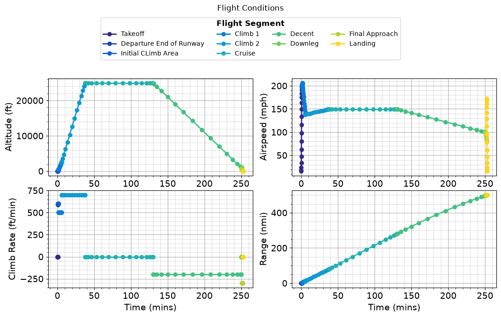
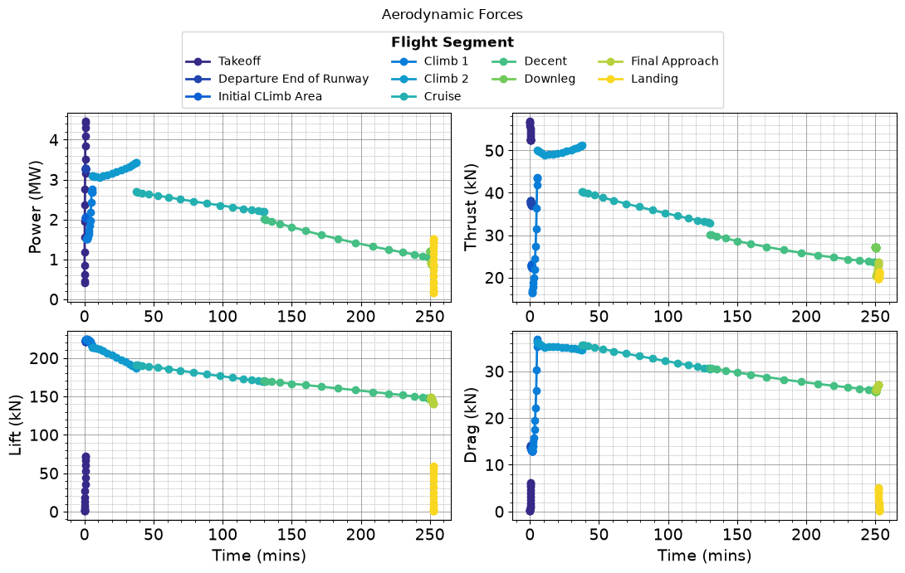
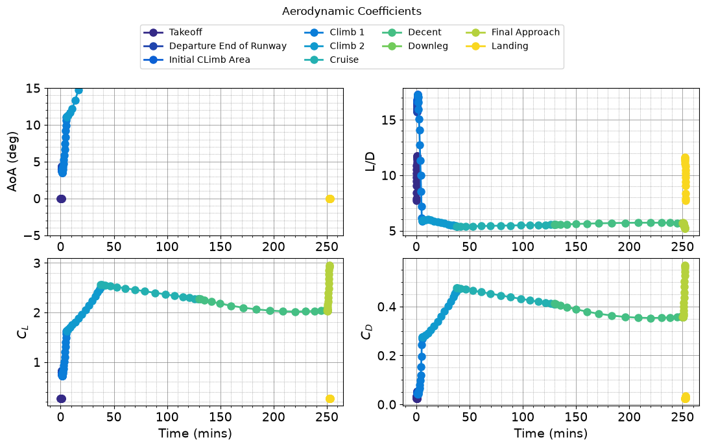
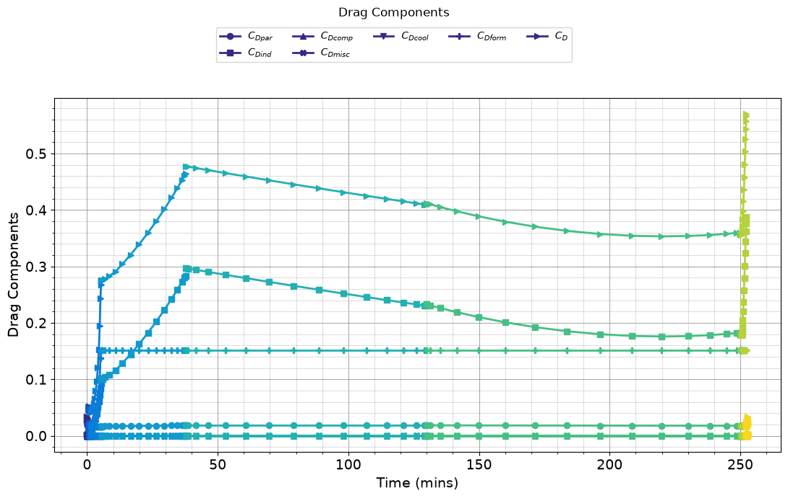
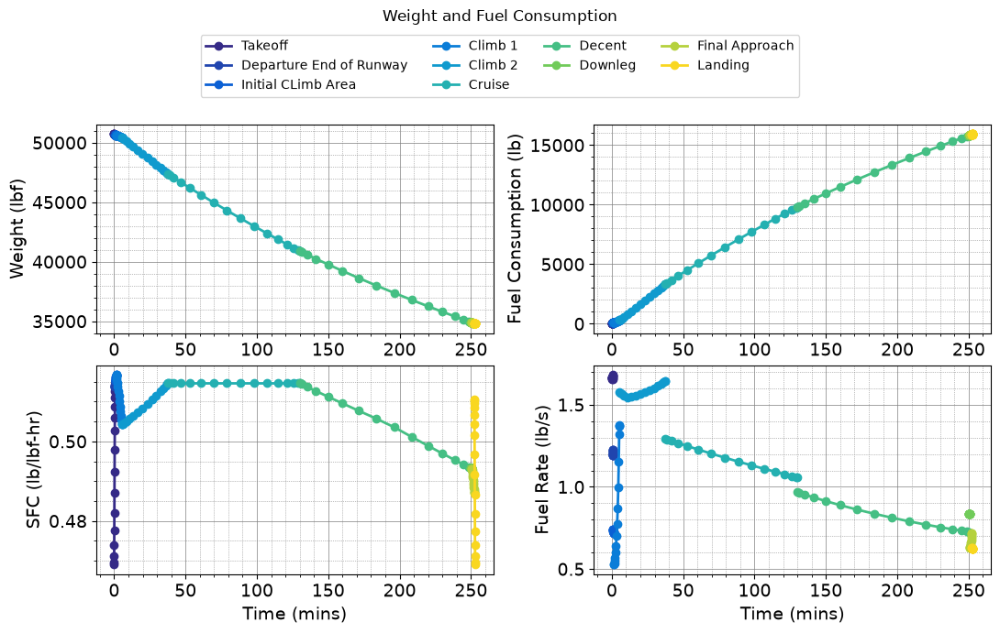
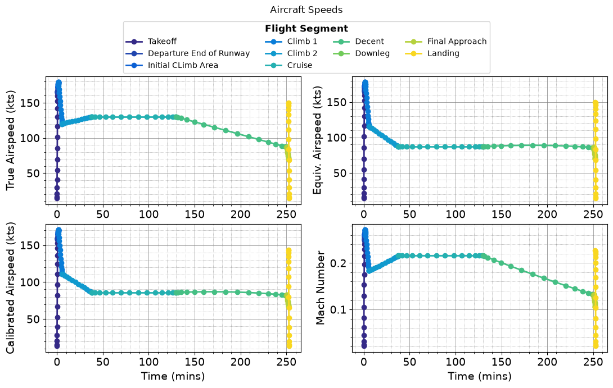
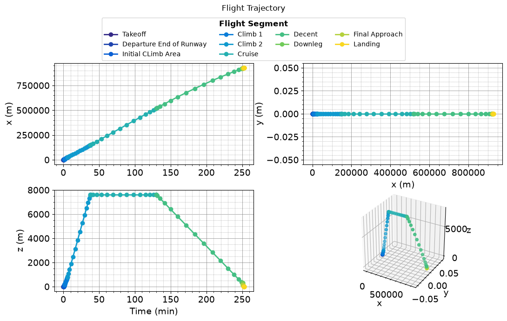
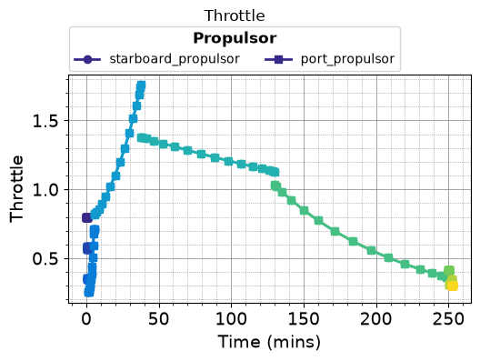

Tutorial 3 - Turboprop Aircraft Simulation#
Welcome to this tutorial on simulating a turboprop aircraft using RCAIDE. This guide will walk you through the code, explain its components, and highlight where modifications can be made to customize the simulation for different vehicle designs.
Header and Imports#
The Imports section is divided into two parts: simulation-specific libraries and general-purpose Python libraries.
The RCAIDE Imports section includes the core modules needed for the simulation. These libraries provide specialized classes and tools for building, analyzing, and running aircraft models.
[1]:
# RCAIDE imports
import RCAIDE
from RCAIDE.Framework.Core import Units
from RCAIDE.Library.Methods.Powertrain.Propulsors.Turboprop import design_turboprop
from RCAIDE.Library.Plots import *
# python imports
import numpy as np
import sys
import matplotlib.pyplot as plt
from copy import deepcopy
import pickle
import os
sys.path.insert(0,(os.path.dirname(os.getcwd())))
Vehicle Setup#
The ``vehicle_setup`` function defines the baseline configuration of the aircraft. This section builds the vehicle step-by-step by specifying its components, geometric properties, and high-level parameters.
1. Creating the Vehicle Instance#
The setup begins by creating a vehicle instance and assigning it a tag. The tag is a unique string identifier used to reference the vehicle during analysis or in post-processing steps.
2. Defining High-Level Vehicle Parameters#
The high-level parameters describe the aircraft’s key operational characteristics, such as:
Maximum Takeoff Weight: The heaviest allowable weight of the aircraft for safe flight.
Operating Empty Weight: The aircraft weight without fuel, passengers, or payload.
Payload: The weight of cargo and passengers.
Max Zero Fuel Weight: The maximum weight of the aircraft excluding fuel.
Units for these parameters can be converted automatically using the Units module to ensure consistency and reduce errors.
3. Defining the Landing Gear#
Landing gear parameters, such as the number of main and nose wheels, are set for the aircraft. While not used in this tutorial, these values can be applied in advanced analyses, such as ground loads or noise prediction.
4. Main Wing Setup#
The main wing is added using the ``Main_Wing`` class. This designation ensures that the primary lifting surface is recognized correctly by the analysis tools. Key properties of the wing include:
Area: The total wing surface area.
Span: The length of the wing from tip to tip.
Aspect Ratio: A ratio of span to average chord, determining wing efficiency.
Segments: Divisions of the wing geometry (e.g., root and tip sections).
Control Surfaces: High-lift devices like flaps and ailerons, defined by span fractions and deflections.
5. Horizontal and Vertical Stabilizers#
The stabilizers provide stability and control for the aircraft:
Horizontal Stabilizer: Defined using the
Horizontal_Tailclass. It follows a similar setup to the main wing but acts as a stabilizing surface.Vertical Stabilizer: Defined using the
Vertical_Tailclass, with an additional option to designate the tail as a T-tail for weight calculations.
6. Fuselage Definition#
The fuselage is modeled by specifying its geometric parameters, such as:
Length: The overall length of the aircraft body.
Width: The widest part of the fuselage cross-section.
Height: The height of the fuselage.
These values influence drag calculations and overall structural weight.
7. Energy Network: Turboprop Engine#
The energy network models the propulsion system, in this case, a turboprop engine. The turboprop network determines the engine’s thrust, bypass ratio, and fuel type. These parameters are essential for performance and fuel efficiency analyses.
More detailed information about turboprop behavior and configurations is provided in the turboprop Modeling Tutorial.
[2]:
def vehicle_setup():
# ------------------------------------------------------------------
# Initialize the Vehicle
# ------------------------------------------------------------------
vehicle = RCAIDE.Vehicle()
vehicle.tag = 'ATR_72'
# ------------------------------------------------------------------
# Vehicle-level Properties
# ------------------------------------------------------------------
# mass properties
vehicle.mass_properties.max_takeoff = 23000
vehicle.mass_properties.takeoff = 23000
vehicle.mass_properties.operating_empty = 13600
vehicle.mass_properties.max_zero_fuel = 21000
vehicle.mass_properties.cargo = 7400
vehicle.mass_properties.center_of_gravity = [[0,0,0]] # Unknown
vehicle.mass_properties.moments_of_inertia.tensor = [[0,0,0]] # Unknown
vehicle.mass_properties.max_fuel = 5000
vehicle.design_mach_number = 0.41
vehicle.design_range = 5471000 *Units.meter
vehicle.design_cruise_alt = 25000 *Units.feet
# envelope properties
vehicle.flight_envelope.design_mach_number = 0.43
vehicle.flight_envelope.design_range = 890 * Units.nmi
vehicle.flight_envelope.design_cruise_altitude = 25000 * Units.feet
vehicle.flight_envelope.ultimate_load = 3.75
vehicle.flight_envelope.positive_limit_load = 1.5
# basic parameters
vehicle.reference_area = 61.0
vehicle.passengers = 72
vehicle.systems.control = "fully powered"
vehicle.systems.accessories = "short range"
# ------------------------------------------------------------------
# Main Wing
# ------------------------------------------------------------------
wing = RCAIDE.Library.Components.Wings.Main_Wing()
wing.tag = 'main_wing'
wing.areas.reference = 61.0
wing.spans.projected = 27.05
wing.aspect_ratio = (wing.spans.projected**2) / wing.areas.reference
wing.sweeps.quarter_chord = 0.0
wing.thickness_to_chord = 0.1
wing.chords.root = 2.7
wing.chords.tip = 1.35
wing.total_length = wing.chords.root
wing.taper = wing.chords.tip/wing.chords.root
wing.chords.mean_aerodynamic = wing.chords.root * 2/3 * (( 1 + wing.taper + wing.taper**2 )/( 1 + wing.taper ))
wing.areas.exposed = 2 * wing.areas.reference
wing.areas.wetted = 2 * wing.areas.reference
wing.twists.root = 4 * Units.degrees
wing.twists.tip = 0 * Units.degrees
wing.origin = [[11.52756129,0,2.009316366]]
wing.aerodynamic_center = [11.52756129 + 0.25*wing.chords.root ,0,2.009316366]
wing.vertical = False
wing.symmetric = True
wing.dynamic_pressure_ratio = 1.0
# Wing Segments
segment = RCAIDE.Library.Components.Wings.Segments.Segment()
segment.tag = 'inboard'
segment.percent_span_location = 0.0
segment.twist = 4.0 * Units.deg
segment.root_chord_percent = 1.
segment.dihedral_outboard = 0.0 * Units.degrees
segment.sweeps.quarter_chord = 0.0 * Units.degrees
segment.thickness_to_chord = .1
wing.append_segment(segment)
segment = RCAIDE.Library.Components.Wings.Segments.Segment()
segment.tag = 'outboard'
segment.percent_span_location = 0.324
segment.twist = 3.0 * Units.deg
segment.root_chord_percent = 1.0
segment.dihedral_outboard = 0.0 * Units.degrees
segment.sweeps.leading_edge = 4.7 * Units.degrees
segment.thickness_to_chord = .1
wing.append_segment(segment)
segment = RCAIDE.Library.Components.Wings.Segments.Segment()
segment.tag = 'tip'
segment.percent_span_location = 1.
segment.twist = 0. * Units.degrees
segment.root_chord_percent = wing.taper
segment.thickness_to_chord = 0.1
segment.dihedral_outboard = 0.
segment.sweeps.quarter_chord = 0.
wing.append_segment(segment)
# add to vehicle
vehicle.append_component(wing)
# ------------------------------------------------------------------
# Horizontal Stabilizer
# ------------------------------------------------------------------
wing = RCAIDE.Library.Components.Wings.Horizontal_Tail()
wing.tag = 'horizontal_stabilizer'
wing.spans.projected = 3.61*2
wing.areas.reference = 15.2
wing.aspect_ratio = (wing.spans.projected**2) / wing.areas.reference
wing.sweeps.leading_edge = 11.56*Units.degrees
wing.thickness_to_chord = 0.1
wing.chords.root = 2.078645129
wing.chords.tip = 0.953457347
wing.total_length = wing.chords.root
wing.taper = wing.chords.tip/wing.chords.root
wing.chords.mean_aerodynamic = wing.chords.root * 2/3 * (( 1 + wing.taper + wing.taper**2 )/( 1 + wing.taper ))
wing.areas.exposed = 2 * wing.areas.reference
wing.areas.wetted = 2 * wing.areas.reference
wing.twists.root = 0 * Units.degrees
wing.twists.tip = 0 * Units.degrees
wing.origin = [[25.505088,0,5.510942426]]
wing.aerodynamic_center = [25.505088+ 0.25*wing.chords.root,0,2.009316366]
wing.vertical = False
wing.symmetric = True
wing.dynamic_pressure_ratio = 1.0
# add to vehicle
vehicle.append_component(wing)
# ------------------------------------------------------------------
# Vertical Stabilizer
# ------------------------------------------------------------------
wing = RCAIDE.Library.Components.Wings.Vertical_Tail()
wing.tag = 'vertical_stabilizer'
wing.spans.projected = 4.5
wing.areas.reference = 12.7
wing.sweeps.quarter_chord = 54 * Units.degrees
wing.thickness_to_chord = 0.1
wing.aspect_ratio = (wing.spans.projected**2) / wing.areas.reference
wing.chords.root = 8.75
wing.chords.tip = 1.738510759
wing.total_length = wing.chords.root
wing.taper = wing.chords.tip/wing.chords.root
wing.chords.mean_aerodynamic = wing.chords.root * 2/3 * (( 1 + wing.taper + wing.taper**2 )/( 1 + wing.taper ))
wing.areas.exposed = 2 * wing.areas.reference
wing.areas.wetted = 2 * wing.areas.reference
wing.twists.root = 0 * Units.degrees
wing.twists.tip = 0 * Units.degrees
wing.origin = [[17.34807199,0,1.3]]
wing.aerodynamic_center = [17.34807199,0,1.3+ 0.25*wing.chords.root]
wing.vertical = True
wing.symmetric = False
wing.t_tail = True
wing.dynamic_pressure_ratio = 1.0
# Wing Segments
segment = RCAIDE.Library.Components.Wings.Segments.Segment()
segment.tag = 'segment_1'
segment.percent_span_location = 0.0
segment.twist = 0.0
segment.root_chord_percent = 1.0
segment.dihedral_outboard = 0.0
segment.sweeps.leading_edge = 75 * Units.degrees
segment.thickness_to_chord = 1.0
wing.append_segment(segment)
segment = RCAIDE.Library.Components.Wings.Segments.Segment()
segment.tag = 'segment_2'
segment.percent_span_location = 1.331360381/wing.spans.projected
segment.twist = 0.0
segment.root_chord_percent = 4.25/wing.chords.root
segment.dihedral_outboard = 0
segment.sweeps.leading_edge = 54 * Units.degrees
segment.thickness_to_chord = 0.1
wing.append_segment(segment)
segment = RCAIDE.Library.Components.Wings.Segments.Segment()
segment.tag = 'segment_3'
segment.percent_span_location = 3.058629978/wing.spans.projected
segment.twist = 0.0
segment.root_chord_percent = 2.35/wing.chords.root
segment.dihedral_outboard = 0
segment.sweeps.leading_edge = 31 * Units.degrees
segment.thickness_to_chord = 0.1
wing.append_segment(segment)
segment = RCAIDE.Library.Components.Wings.Segments.Segment()
segment.tag = 'segment_4'
segment.percent_span_location = 4.380739035/wing.spans.projected
segment.twist = 0.0
segment.root_chord_percent = 2.190082795/wing.chords.root
segment.dihedral_outboard = 0
segment.sweeps.leading_edge = 52 * Units.degrees
segment.thickness_to_chord = 0.1
wing.append_segment(segment)
segment = RCAIDE.Library.Components.Wings.Segments.Segment()
segment.tag = 'segment_5'
segment.percent_span_location = 1.0
segment.twist = 0.0
segment.root_chord_percent = 1.3/wing.chords.root
segment.dihedral_outboard = 0
segment.sweeps.leading_edge = 0 * Units.degrees
segment.thickness_to_chord = 0.1
wing.append_segment(segment)
# add to vehicle
vehicle.append_component(wing)
# ------------------------------------------------------------------
# Fuselage
# ------------------------------------------------------------------
fuselage = RCAIDE.Library.Components.Fuselages.Fuselage()
fuselage.tag = 'fuselage'
fuselage.seats_abreast = 4
fuselage.seat_pitch = 18
fuselage.fineness.nose = 1.6
fuselage.fineness.tail = 2.
fuselage.lengths.total = 27.12
fuselage.lengths.nose = 3.375147531
fuselage.lengths.tail = 9.2
fuselage.effective_diameter = 2.985093814
fuselage.lengths.cabin = fuselage.lengths.total- (fuselage.lengths.nose + fuselage.lengths.tail )
fuselage.width = 2.985093814
fuselage.heights.maximum = 2.755708426
fuselage.areas.side_projected = fuselage.heights.maximum * fuselage.lengths.total * Units['meters**2']
fuselage.areas.wetted = np.pi * fuselage.width/2 * fuselage.lengths.total * Units['meters**2']
fuselage.areas.front_projected = np.pi * fuselage.width/2 * Units['meters**2']
fuselage.differential_pressure = 5.0e4 * Units.pascal
fuselage.heights.at_quarter_length = fuselage.heights.maximum * Units.meter
fuselage.heights.at_three_quarters_length = fuselage.heights.maximum * Units.meter
fuselage.heights.at_wing_root_quarter_chord = fuselage.heights.maximum* Units.meter
# Segment
segment = RCAIDE.Library.Components.Fuselages.Segments.Segment()
segment.tag = 'segment_1'
segment.percent_x_location = 0.0000
segment.percent_z_location = 0.0000
segment.height = 1E-3
segment.width = 1E-3
fuselage.segments.append(segment)
# Segment
segment = RCAIDE.Library.Components.Fuselages.Segments.Segment()
segment.tag = 'segment_2'
segment.percent_x_location = 0.08732056/fuselage.lengths.total
segment.percent_z_location = 0.0000
segment.height = 0.459245202
segment.width = 0.401839552
fuselage.segments.append(segment)
# Segment
segment = RCAIDE.Library.Components.Fuselages.Segments.Segment()
segment.tag = 'segment_3'
segment.percent_x_location = 0.197094977/fuselage.lengths.total
segment.percent_z_location = 0.001
segment.height = 0.688749197
segment.width = 0.918490404
fuselage.segments.append(segment)
# Segment
segment = RCAIDE.Library.Components.Fuselages.Segments.Segment()
segment.tag = 'segment_4'
segment.percent_x_location = 0.41997031/fuselage.lengths.total
segment.percent_z_location = 0.0000
segment.height = 0.975896055
segment.width = 1.320329956
fuselage.segments.append(segment)
# Segment
segment = RCAIDE.Library.Components.Fuselages.Segments.Segment()
segment.tag = 'segment_5'
segment.percent_x_location = 0.753451685/fuselage.lengths.total
segment.percent_z_location = 0.0014551442477876075 # this is given as a percentage of the fuselage length i.e. location of the center of the cross section/fuselage length
segment.height = 1.320329956
segment.width = 1.664763858
fuselage.segments.append(segment)
# Segment
segment = RCAIDE.Library.Components.Fuselages.Segments.Segment()
segment.tag = 'segment_6'
segment.percent_x_location = 1.14389933/fuselage.lengths.total
segment.percent_z_location = 0.0036330994100294946
segment.height = 1.607358208
segment.width = 2.009316366
fuselage.segments.append(segment)
# Segment
segment = RCAIDE.Library.Components.Fuselages.Segments.Segment()
segment.tag = 'segment_7'
segment.percent_x_location = 1.585491874/fuselage.lengths.total
segment.percent_z_location = 0.008262262758112099
segment.height = 2.18141471
segment.width = 2.411155918
fuselage.segments.append(segment)
# Segment
segment = RCAIDE.Library.Components.Fuselages.Segments.Segment()
segment.tag = 'segment_8'
segment.percent_x_location = 2.031242539/fuselage.lengths.total
segment.percent_z_location = 0.013612882669616513
segment.height = 2.468442962
segment.width = 2.698065563
fuselage.segments.append(segment)
# Segment
segment = RCAIDE.Library.Components.Fuselages.Segments.Segment()
segment.tag = 'segment_9'
segment.percent_x_location = 2.59009412/fuselage.lengths.total
segment.percent_z_location = 0.01636321766224188
segment.height = 2.640659912
segment.width = 2.812876863
fuselage.segments.append(segment)
# Segment
segment = RCAIDE.Library.Components.Fuselages.Segments.Segment()
segment.tag = 'segment_10'
segment.percent_x_location = 3.375147531/fuselage.lengths.total
segment.percent_z_location = 0.01860240047935103
segment.height = 2.755708426
segment.width = 2.985093814
fuselage.segments.append(segment)
# Segment
segment = RCAIDE.Library.Components.Fuselages.Segments.Segment()
segment.tag = 'segment_11'
segment.percent_x_location = 17.01420312/fuselage.lengths.total
segment.percent_z_location = 0.01860240047935103
segment.height = 2.755708426
segment.width = 2.985093814
fuselage.segments.append(segment)
# Segment
segment = RCAIDE.Library.Components.Fuselages.Segments.Segment()
segment.tag = 'segment_12'
segment.percent_x_location = 18.64210783/fuselage.lengths.total
segment.percent_z_location = 0.01860240047935103
segment.height = 2.698302776
segment.width = 2.927925377
fuselage.segments.append(segment)
# Segment
segment = RCAIDE.Library.Components.Fuselages.Segments.Segment()
segment.tag = 'segment_13'
segment.percent_x_location = 22.7416002/fuselage.lengths.total
segment.percent_z_location = 0.043363795685840714
segment.height = 1.779575158
segment.width = 1.722050901
fuselage.segments.append(segment)
# Segment
segment = RCAIDE.Library.Components.Fuselages.Segments.Segment()
segment.tag = 'segment_14'
segment.percent_x_location = 1.
segment.percent_z_location = 0.06630560070058995
segment.height = 0.401839552
segment.width = 0.401839552
fuselage.segments.append(segment)
# add to vehicle
vehicle.append_component(fuselage)
# ------------------------------------------------------------------
# Landing gear
# ------------------------------------------------------------------
landing_gear = RCAIDE.Library.Components.Landing_Gear.Landing_Gear()
main_gear = RCAIDE.Library.Components.Landing_Gear.Main_Landing_Gear()
nose_gear = RCAIDE.Library.Components.Landing_Gear.Nose_Landing_Gear()
main_gear.strut_length = 12. * Units.inches
nose_gear.strut_length = 6. * Units.inches
landing_gear.main = main_gear
landing_gear.nose = nose_gear
#add to vehicle
vehicle.landing_gear = landing_gear
# ######################################################## Energy Network #########################################################
net = RCAIDE.Framework.Networks.Fuel()
#-------------------------------------------------------------------------------------------------------------------------
# Fuel Distrubition Line
#-------------------------------------------------------------------------------------------------------------------------
fuel_line = RCAIDE.Library.Components.Powertrain.Distributors.Fuel_Line()
#------------------------------------------------------------------------------------------------------------------------------------
# Propulsor
#------------------------------------------------------------------------------------------------------------------------------------
starboard_propulsor = RCAIDE.Library.Components.Powertrain.Propulsors.Turboprop()
starboard_propulsor.tag = 'starboard_propulsor'
starboard_propulsor.origin = [[ 9.559106394 ,4.219315295, 1.616135105]]
starboard_propulsor.working_fluid = RCAIDE.Library.Attributes.Gases.Air()
starboard_propulsor.gearbox.efficiency = 0.99
starboard_propulsor.design_thrust = 15000.0 * Units.N
starboard_propulsor.design_altitude = 25000*Units.ft
starboard_propulsor.design_freestream_velocity = 270 * Units.kts
#Propeller Design
propeller = RCAIDE.Library.Components.Powertrain.Converters.Propeller()
propeller.tag = 'starboard_propulsor_propeller'
propeller.origin = [[9.1,4.219315295, 1.616135105 ]]
propeller.active = True
propeller.tip_radius = 2.8/2
propeller.hub_radius = 0.1
propeller.number_of_blades = 3
propeller.design_efficiency = 0.83
propeller.design_angular_velocity = 3000.0 * Units.rpm
propeller.design_thrust = starboard_propulsor.design_thrust
propeller.design_altitude = starboard_propulsor.design_altitude
propeller.design_freestream_velocity = starboard_propulsor.design_freestream_velocity
starboard_propulsor.propeller = propeller
# Ram inlet
ram = RCAIDE.Library.Components.Powertrain.Converters.Ram()
ram.tag = 'ram'
starboard_propulsor.ram = ram
# inlet nozzle
inlet_nozzle = RCAIDE.Library.Components.Powertrain.Converters.Compression_Nozzle()
inlet_nozzle.tag = 'inlet nozzle'
inlet_nozzle.pressure_ratio = 0.98
inlet_nozzle.compressibility_effects = False
starboard_propulsor.inlet_nozzle = inlet_nozzle
# compressor
compressor = RCAIDE.Library.Components.Powertrain.Converters.Compressor()
compressor.tag = 'lpc'
compressor.pressure_ratio = 10
starboard_propulsor.compressor = compressor
# combustor
combustor = RCAIDE.Library.Components.Powertrain.Converters.Combustor()
combustor.tag = 'Comb'
combustor.efficiency = 0.99
combustor.turbine_inlet_temperature = 1370
combustor.pressure_ratio = 0.96
combustor.fuel_data = RCAIDE.Library.Attributes.Propellants.Jet_A()
starboard_propulsor.combustor = combustor
# high pressure turbine
high_pressure_turbine = RCAIDE.Library.Components.Powertrain.Converters.Turbine()
high_pressure_turbine.tag ='hpt'
high_pressure_turbine.mechanical_efficiency = 0.99
starboard_propulsor.high_pressure_turbine = high_pressure_turbine
# low pressure turbine
low_pressure_turbine = RCAIDE.Library.Components.Powertrain.Converters.Turbine()
low_pressure_turbine.tag ='lpt'
low_pressure_turbine.mechanical_efficiency = 0.99
starboard_propulsor.low_pressure_turbine = low_pressure_turbine
# core nozzle
core_nozzle = RCAIDE.Library.Components.Powertrain.Converters.Expansion_Nozzle()
core_nozzle.tag = 'core nozzle'
core_nozzle.pressure_ratio = 0.99
starboard_propulsor.core_nozzle = core_nozzle
# design starboard_propulsor
design_turboprop(starboard_propulsor)
#------------------------------------------------------------------------------------------------------------------------------------
# Nacelles
#------------------------------------------------------------------------------------------------------------------------------------
nacelle = RCAIDE.Library.Components.Nacelles.Stack_Nacelle()
nacelle.tag = 'nacelle_1'
nacelle.length = 5
nacelle.diameter = 0.85
nacelle.areas.wetted = 1.0
nacelle.origin = [[8.941625295,4.219315295, 1.616135105 ]]
nacelle.flow_through = False
nac_segment = RCAIDE.Library.Components.Nacelles.Segments.Segment()
nac_segment.tag = 'segment_1'
nac_segment.percent_x_location = 0.0
nac_segment.height = 0.0
nac_segment.width = 0.0
nacelle.append_segment(nac_segment)
nac_segment = RCAIDE.Library.Components.Nacelles.Segments.Segment()
nac_segment.tag = 'segment_2'
nac_segment.percent_x_location = 0.2 / nacelle.length
nac_segment.percent_z_location = 0
nac_segment.height = 0.4
nac_segment.width = 0.4
nacelle.append_segment(nac_segment)
nac_segment = RCAIDE.Library.Components.Nacelles.Segments.Segment()
nac_segment.tag = 'segment_3'
nac_segment.percent_x_location = 0.6 / nacelle.length
nac_segment.percent_z_location = 0
nac_segment.height = 0.52
nac_segment.width = 0.700
nacelle.append_segment(nac_segment)
nac_segment = RCAIDE.Library.Components.Nacelles.Segments.Segment()
nac_segment.tag = 'segment_4'
nac_segment.percent_x_location = 0.754 / nacelle.length
nac_segment.percent_z_location = -0.16393 / nacelle.length
nac_segment.height = 0.9
nac_segment.width = 0.85
nacelle.append_segment(nac_segment)
nac_segment = RCAIDE.Library.Components.Nacelles.Segments.Segment()
nac_segment.tag = 'segment_5'
nac_segment.percent_x_location = 1.154 / nacelle.length
nac_segment.percent_z_location = -0.0819 / nacelle.length
nac_segment.height = 0.8
nac_segment.width = 0.85
nacelle.append_segment(nac_segment)
nac_segment = RCAIDE.Library.Components.Nacelles.Segments.Segment()
nac_segment.tag = 'segment_6'
nac_segment.percent_x_location = 3.414 / nacelle.length
nac_segment.percent_z_location = 0.08197 / nacelle.length
nac_segment.height = 0.6
nac_segment.width = 0.85
nacelle.append_segment(nac_segment)
nac_segment = RCAIDE.Library.Components.Nacelles.Segments.Segment()
nac_segment.tag = 'segment_6'
nac_segment.percent_x_location = 0.96
nac_segment.percent_z_location = 0.08197 / nacelle.length
nac_segment.height = 0.3
nac_segment.width = 0.50
nacelle.append_segment(nac_segment)
nac_segment = RCAIDE.Library.Components.Nacelles.Segments.Segment()
nac_segment.tag = 'segment_7'
nac_segment.percent_x_location = 1.0
nac_segment.percent_z_location = 0
nac_segment.height = 0.001
nac_segment.width = 0.001
nacelle.append_segment(nac_segment)
starboard_propulsor.nacelle = nacelle
net.propulsors.append(starboard_propulsor)
#------------------------------------------------------------------------------------------------------------------------------------
# Propulsor: Port Propulsor
#------------------------------------------------------------------------------------------------------------------------------------
# copy turboprop
port_propulsor = deepcopy(starboard_propulsor)
port_propulsor.tag = 'port_propulsor'
port_propulsor.origin = [[ 9.559106394 ,-4.219315295, 1.616135105]] # change origin
port_propulsor.nacelle.tag = 'port_propulsor_nacelle'
port_propulsor.nacelle.origin = [[8.941625295,-4.219315295, 1.616135105 ]]
# append propulsor to distribution line
net.propulsors.append(port_propulsor)
#-------------------------------------------------------------------------------------------------------------------------
# Energy Source: Fuel Tank
#-------------------------------------------------------------------------------------------------------------------------
# fuel tank
fuel_tank = RCAIDE.Library.Components.Powertrain.Sources.Fuel_Tanks.Fuel_Tank()
fuel_tank.origin = vehicle.wings.main_wing.origin
fuel_tank.fuel = RCAIDE.Library.Attributes.Propellants.Jet_A1()
fuel_tank.fuel.mass_properties.mass = vehicle.mass_properties.max_takeoff-vehicle.mass_properties.max_fuel
fuel_tank.fuel.origin = vehicle.wings.main_wing.mass_properties.center_of_gravity
fuel_tank.fuel.mass_properties.center_of_gravity = vehicle.wings.main_wing.aerodynamic_center
fuel_tank.volume = fuel_tank.fuel.mass_properties.mass/fuel_tank.fuel.density
# apend fuel tank to dataclass of fuel tanks on fuel line
fuel_line.fuel_tanks.append(fuel_tank)
#------------------------------------------------------------------------------------------------------------------------------------
# Assign propulsors to fuel line
fuel_line.assigned_propulsors = [[starboard_propulsor.tag, port_propulsor.tag]]
# Append fuel line to Network
net.fuel_lines.append(fuel_line)
# Append energy network to aircraft
vehicle.append_energy_network(net)
return vehicle
Configurations Setup#
The ``configs_setup`` function defines the different vehicle configurations (referred to as configs) used during the simulation. Configurations allow for modifications to the baseline vehicle, such as altering control surface settings, without redefining the entire vehicle.
1. Base Configuration#
The base configuration serves as the foundation for all other configurations. It is defined to match the baseline vehicle created in the vehicle_setup function. Configurations in RCAIDE are created as containers using RCAIDE Data classes. These classes provide additional functionality, such as the ability to append new configurations or modifications.
[3]:
# ----------------------------------------------------------------------
# Define the Configurations
# ---------------------------------------------------------------------
def configs_setup(vehicle):
# ------------------------------------------------------------------
# Initialize Configurations
# ------------------------------------------------------------------
configs = RCAIDE.Library.Components.Configs.Config.Container()
base_config = RCAIDE.Library.Components.Configs.Config(vehicle)
base_config.tag = 'base'
configs.append(base_config)
return configs
Base Analysis#
The ``base_analysis`` function defines the analyses required for evaluating the aircraft. Each analysis addresses a specific aspect of the vehicle’s performance or characteristics. Below are the key analyses, their purpose, and considerations for their use.
1. Weights Analysis#
The weights analysis calculates the distribution of the aircraft’s weight across various components. This method is based on empirical correlations designed for tube-and-wing transport aircraft configurations.
Provides a breakdown of component weights (e.g., wings, fuselage, engines).
While informative, the results of this analysis are not directly used in the performance evaluation.
2. Aerodynamics Analysis#
The aerodynamics analysis evaluates the aerodynamic performance of the aircraft. It uses RCAIDE’s fidelity zero method:
Fidelity Zero: This is RCAIDE’s baseline aerodynamic analysis method, suitable for subsonic transport aircraft.
Similar to aerodynamic methods found in conceptual design texts.
Provides estimates for lift, drag, and other aerodynamic coefficients.
Note: Higher-fidelity aerodynamic methods are available for more detailed analyses if needed.
3. Stability Analysis#
The stability analysis calculates stability derivatives for the aircraft. While it is not used in the current mission setup, it can be run post-mission for checks or additional analysis.
Like the aerodynamic method, it uses fidelity zero for baseline stability analysis.
Applicable for basic stability checks of subsonic transport aircraft.
4. Energy Analysis#
The energy analysis runs the energy network attached to the vehicle. For this turboprop-powered aircraft:
The analysis evaluates the turboprop energy network.
Ensures the propulsion system behavior, such as thrust and fuel consumption, is accounted for.
5. Planet Analysis#
The planet analysis defines the planetary environment the vehicle operates in. This setup allows for the attachment of an atmospheric model.
6. Atmosphere Analysis#
The atmosphere analysis sets the atmospheric conditions for the simulation. A common choice is the US 1976 Standard Atmosphere, which provides:
Standard temperature, pressure, and density profiles with altitude.
Consistent atmospheric conditions for performance evaluations.
[4]:
def base_analysis(vehicle):
# ------------------------------------------------------------------
# Initialize the Analyses
# ------------------------------------------------------------------
analyses = RCAIDE.Framework.Analyses.Vehicle()
analyses.vehicle = vehicle
# Geometry
geometry = RCAIDE.Framework.Analyses.Geometry.Geometry()
geometry.settings.overwrite_reference = True
geometry.settings.update_wing_properties = True
analyses.append(geometry)
# ------------------------------------------------------------------
# Weights
weights = RCAIDE.Framework.Analyses.Weights.Conventional_Transport()
weights.aircraft_type = "Transport"
analyses.append(weights)
# ------------------------------------------------------------------
# Aerodynamics Analysis
aerodynamics = RCAIDE.Framework.Analyses.Aerodynamics.Vortex_Lattice_Method()
aerodynamics.settings.drag_coefficient_increment = 0.0000
analyses.append(aerodynamics)
# ------------------------------------------------------------------
# Energy
energy= RCAIDE.Framework.Analyses.Energy.Energy()
analyses.append(energy)
# ------------------------------------------------------------------
# Planet Analysis
planet = RCAIDE.Framework.Analyses.Planets.Earth()
analyses.append(planet)
# ------------------------------------------------------------------
# Atmosphere Analysis
atmosphere = RCAIDE.Framework.Analyses.Atmospheric.US_Standard_1976()
analyses.append(atmosphere)
# done!
return analyses
Analyses Setup#
The ``analyses_setup`` function assigns a set of analyses to each vehicle configuration. Analyses are used to evaluate the aircraft’s performance, aerodynamics, energy systems, and other characteristics for a given configuration.
1. Overview of Analyses Assignment#
In this tutorial, all configurations share the same set of analyses. However, this function provides the flexibility to assign a unique set of analyses to any specific configuration.
2. Purpose of Analyses Assignment#
The analyses ensure that the defined vehicle configurations (e.g., cruise, takeoff, landing) are evaluated correctly during the simulation. Each configuration can have:
Common Analyses: Shared across multiple configurations for simplicity.
Custom Analyses: Tailored to a specific phase of flight or performance evaluation.
3. Typical Analyses Included#
The following analyses are typically assigned to each configuration:
Weights Analysis: Computes weight distribution across components.
Aerodynamics Analysis: Estimates lift, drag, and aerodynamic coefficients.
Stability Analysis: Evaluates stability derivatives for flight control assessments.
Energy Analysis: Runs the energy network (e.g., turboprop engine) for thrust and fuel performance.
Atmosphere Analysis: Sets atmospheric conditions using standard atmospheric models.
By assigning these analyses, the vehicle’s behavior under different configurations (e.g., cruise, takeoff, landing) can be comprehensively evaluated.
4. Customizing Analyses#
To assign a custom analysis set for a specific configuration:
Define a new analysis function tailored to the desired evaluation.
Replace the default analyses for the target configuration by calling the custom function.
For example, the takeoff configuration might use a modified aerodynamic analysis to account for flap and slat deployment.
[5]:
def analyses_setup(configs):
analyses = RCAIDE.Framework.Analyses.Analysis.Container()
# build a base analysis for each config
for tag,config in configs.items():
analysis = base_analysis(config)
analyses[tag] = analysis
return analyses
Mission Setup#
The ``mission_setup`` function defines the mission profile used to compute the aircraft’s performance. A mission profile consists of sequential segments that represent different phases of flight, such as climb, cruise, and descent.
1. Mission Profile Overview#
A mission profile is made up of individual flight segments. Each segment specifies the aircraft’s flight conditions, such as:
Altitude
Speed
Range
Time
These segments are simulated sequentially, allowing for a detailed performance analysis of the vehicle across all phases of flight.
2. Segments in the Mission Profile#
Common segments in a mission profile include:
Taxi: Ground movement of the aircraft before takeoff and after landing.
Takeoff: Acceleration and lift-off phase with high-lift devices deployed.
Climb: Gradual ascent to cruise altitude, often with reduced flap/slat deployment.
Cruise: Level flight at a constant altitude and speed for fuel-efficient operation.
Descent: Controlled reduction in altitude as the aircraft prepares for landing.
Landing: Final phase of flight with maximum flap and slat deployment for touchdown.
Each segment defines specific performance conditions and parameters, such as speed, altitude, and duration.
For more information on the mission solver and its implementation, refer to the relevant RCAIDE documentation.
[6]:
def mission_setup(analyses):
# ------------------------------------------------------------------
# Initialize the Mission
# ------------------------------------------------------------------
mission = RCAIDE.Framework.Mission.Sequential_Segments()
mission.tag = 'mission'
# unpack Segments module
Segments = RCAIDE.Framework.Mission.Segments
base_segment = Segments.Segment()
base_segment.state.numerics.solver.type = 'root_finder'
# ------------------------------------------------------------------
# Takeoff
# ------------------------------------------------------------------
segment = Segments.Ground.Takeoff(base_segment)
segment.tag = "Takeoff"
segment.analyses.extend( analyses.base)
segment.velocity_start = 70.93977956244031*0.1
segment.velocity_end = 70.93977956244031*1.2
segment.friction_coefficient = 0.04
segment.throttle = 0.8
mission.append_segment(segment)
# ------------------------------------------------------------------
# Departure End of Runway Segment Flight 1 :
# ------------------------------------------------------------------
segment = Segments.Climb.Linear_Speed_Constant_Rate(base_segment)
segment.tag = 'Departure_End_of_Runway'
segment.analyses.extend( analyses.base )
segment.altitude_start = 0.0 * Units.feet
segment.altitude_end = 50.0 * Units.feet
segment.air_speed_start = 70.93977956244031 *1.2
segment.air_speed_end = 70.93977956244031 *1.25
# define flight dynamics to model
segment.flight_dynamics.force_x = True
segment.flight_dynamics.force_z = True
# define flight controls
segment.assigned_control_variables.throttle.active = True
segment.assigned_control_variables.throttle.assigned_propulsors = [['starboard_propulsor','port_propulsor']]
segment.assigned_control_variables.pitch_angle.active = True
mission.append_segment(segment)
# ------------------------------------------------------------------
# Initial Climb Area Segment Flight 1
# ------------------------------------------------------------------
segment = Segments.Climb.Linear_Speed_Constant_Rate(base_segment)
segment.tag = 'Initial_CLimb_Area'
segment.analyses.extend( analyses.base )
segment.altitude_start = 50.0 * Units.feet
segment.altitude_end = 500.0 * Units.feet
segment.air_speed_end = 70.93977956244031 *1.3
segment.climb_rate = 600 * Units['ft/min']
# define flight dynamics to model
segment.flight_dynamics.force_x = True
segment.flight_dynamics.force_z = True
# define flight controls
segment.assigned_control_variables.throttle.active = True
segment.assigned_control_variables.throttle.assigned_propulsors = [['starboard_propulsor','port_propulsor']]
segment.assigned_control_variables.pitch_angle.active = True
mission.append_segment(segment)
# ------------------------------------------------------------------
# Climb Segment Flight 1
# ------------------------------------------------------------------
segment = Segments.Climb.Linear_Speed_Constant_Rate(base_segment)
segment.tag = 'Climb_1'
segment.analyses.extend( analyses.base)
segment.altitude_start = 500.0 * Units.feet
segment.altitude_end = 2500 * Units.feet
segment.air_speed_end = 120 * Units.kts
segment.climb_rate = 500* Units['ft/min']
# define flight dynamics to model
segment.flight_dynamics.force_x = True
segment.flight_dynamics.force_z = True
# define flight controls
segment.assigned_control_variables.throttle.active = True
segment.assigned_control_variables.throttle.assigned_propulsors = [['starboard_propulsor','port_propulsor']]
segment.assigned_control_variables.pitch_angle.active = True
mission.append_segment(segment)
# ------------------------------------------------------------------
# Climb 1 : constant Speed, constant rate segment
# ------------------------------------------------------------------
segment = Segments.Climb.Linear_Speed_Constant_Rate(base_segment)
segment.tag = "Climb_2"
segment.analyses.extend( analyses.base)
segment.altitude_start = 2500.0 * Units.feet
segment.altitude_end = 25000 * Units.feet
segment.air_speed_end = 130 * Units.kts
segment.climb_rate = 700.034 * Units['ft/min']
# define flight dynamics to model
segment.flight_dynamics.force_x = True
segment.flight_dynamics.force_z = True
# define flight controls
segment.assigned_control_variables.throttle.active = True
segment.assigned_control_variables.throttle.assigned_propulsors = [['starboard_propulsor','port_propulsor']]
segment.assigned_control_variables.pitch_angle.active = True
mission.append_segment(segment)
# ------------------------------------------------------------------
# Cruise Segment: constant Speed, constant altitude
# ------------------------------------------------------------------
segment = Segments.Cruise.Constant_Speed_Constant_Altitude(base_segment)
segment.tag = "Cruise"
segment.analyses.extend(analyses.base)
segment.altitude = 25000 * Units.feet
segment.air_speed = 130 * Units.kts
segment.distance = 200. * Units.nautical_mile
# define flight dynamics to model
segment.flight_dynamics.force_x = True
segment.flight_dynamics.force_z = True
# define flight controls
segment.assigned_control_variables.throttle.active = True
segment.assigned_control_variables.throttle.assigned_propulsors = [['starboard_propulsor','port_propulsor']]
segment.assigned_control_variables.pitch_angle.active = True
mission.append_segment(segment)
# ------------------------------------------------------------------
# Descent Segment Flight 1
# ------------------------------------------------------------------
segment = Segments.Climb.Linear_Speed_Constant_Rate(base_segment)
segment.tag = "Decent"
segment.analyses.extend( analyses.base)
segment.altitude_start = 25000 * Units.feet
segment.altitude_end = 1000 * Units.feet
segment.air_speed_end = 100 * Units['mph']
segment.climb_rate = -200 * Units['ft/min']
# define flight dynamics to model
segment.flight_dynamics.force_x = True
segment.flight_dynamics.force_z = True
# define flight controls
segment.assigned_control_variables.throttle.active = True
segment.assigned_control_variables.throttle.assigned_propulsors = [['starboard_propulsor','port_propulsor']]
segment.assigned_control_variables.pitch_angle.active = True
mission.append_segment(segment)
# ------------------------------------------------------------------
# Downleg_Altitude Segment Flight 1
# ------------------------------------------------------------------
segment = Segments.Cruise.Constant_Speed_Constant_Altitude(base_segment)
segment.tag = 'Downleg'
segment.analyses.extend(analyses.base)
segment.air_speed = 100 * Units['mph']
segment.distance = 6000 * Units.feet
# define flight dynamics to model
segment.flight_dynamics.force_x = True
segment.flight_dynamics.force_z = True
# define flight controls
segment.assigned_control_variables.throttle.active = True
segment.assigned_control_variables.throttle.assigned_propulsors = [['starboard_propulsor','port_propulsor']]
segment.assigned_control_variables.pitch_angle.active = True
mission.append_segment(segment)
# ------------------------------------------------------------------
# Baseleg Segment Flight 1
# ------------------------------------------------------------------
segment = Segments.Climb.Linear_Speed_Constant_Rate(base_segment)
segment.tag = 'Baseleg'
segment.analyses.extend( analyses.base)
segment.altitude_start = 1000 * Units.feet
segment.altitude_end = 500.0 * Units.feet
segment.air_speed_end = 90 * Units['mph']
segment.climb_rate = -350 * Units['ft/min']
# define flight dynamics to model
segment.flight_dynamics.force_x = True
segment.flight_dynamics.force_z = True
# define flight controls
segment.assigned_control_variables.throttle.active = True
segment.assigned_control_variables.throttle.assigned_propulsors = [['starboard_propulsor','port_propulsor']]
segment.assigned_control_variables.pitch_angle.active = True
# ------------------------------------------------------------------
# Final Approach Segment Flight 1
# ------------------------------------------------------------------
segment = Segments.Climb.Linear_Speed_Constant_Rate(base_segment)
segment_name = 'Final_Approach'
segment.tag = segment_name
segment.analyses.extend( analyses.base)
segment.altitude_start = 500.0 * Units.feet
segment.altitude_end = 00.0 * Units.feet
segment.air_speed_end = 80 * Units['mph']
segment.climb_rate = -300 * Units['ft/min']
# define flight dynamics to model
segment.flight_dynamics.force_x = True
segment.flight_dynamics.force_z = True
# define flight controls
segment.assigned_control_variables.throttle.active = True
segment.assigned_control_variables.throttle.assigned_propulsors = [['starboard_propulsor','port_propulsor']]
segment.assigned_control_variables.pitch_angle.active = True
mission.append_segment(segment)
# ------------------------------------------------------------------
# Landing
# ------------------------------------------------------------------
segment = Segments.Ground.Landing(base_segment)
segment.tag = "Landing"
segment.analyses.extend( analyses.base)
segment.velocity_end = 70.93977956244031*0.1
segment.friction_coefficient = 0.4
segment.altitude = 0.0
segment.assigned_control_variables.elapsed_time.active = True
segment.assigned_control_variables.elapsed_time.initial_guess_values = [[30.]]
mission.append_segment(segment)
return mission
Missions Setup#
The missions_setup function is responsible for setting up a list of missions. This allows multiple missions to be incorporated if desired, but only one is used here.
Initialize Missions Object: It creates an empty
Missionsobject from theRCAIDE.Framework.Missionmodule.Tag the Mission: It assigns the tag
'base_mission'to the providedmissionobject. This tag is used to identify the mission.Add Mission to List: It adds the tagged
missionto theMissionsobject.Return Missions Object: Finally, it returns the
Missionsobject, which now contains the tagged mission.
[7]:
def missions_setup(mission):
missions = RCAIDE.Framework.Mission.Missions()
# base mission
mission.tag = 'base_mission'
missions.append(mission)
return missions
[8]:
def save_results(results):
# Store data (serialize)
with open('ATR_72_results.pkl', 'wb') as file:
pickle.dump(results, file)
return
Save Results#
The save_results function is responsible for saving the results of a mission to a specified file. Here’s a step-by-step breakdown of what it does:
Parameters:
results: The results data that needs to be saved.filename: The name of the file where the results will be saved.
Functionality:
Open File: It opens the specified file in write mode.
Write Results: It writes the results data to the file.
Close File: It closes the file to ensure all data is properly saved.
[9]:
def save_results(results):
# Store data (serialize)
with open('ATR_72_results.pkl', 'wb') as file:
pickle.dump(results, file)
return
Plot Mission#
The last function in this file is used to plot the performance results from the mission evaluation. The results shown are not an exhaustive list of RCAIDE outputs, and custom plotting routines can be created.
[10]:
def plot_mission(results):
# Plot Flight Conditions
plot_flight_conditions(results)
# Plot Aerodynamic Forces
plot_aerodynamic_forces(results)
# Plot Aerodynamic Coefficients
plot_aerodynamic_coefficients(results)
# Drag Components
plot_drag_components(results)
# Plot Altitude, sfc, vehicle weight
plot_altitude_sfc_weight(results)
# Plot Velocities
plot_aircraft_velocities(results)
# Plot Trajectory
plot_flight_trajectory(results)
# Plot throttles
plot_propulsor_throttles(results)
return
Main Script#
The main script is used to call each of the functions defined above to execute the mission. A main script is used to run the functions for increased readability and maintainability.
[11]:
vehicle = vehicle_setup()
configs = configs_setup(vehicle)
# create analyses
analyses = analyses_setup(configs)
# mission analyses
mission = mission_setup(analyses)
# create mission instances (for multiple types of missions)
missions = missions_setup(mission)
# mission analysis
results = missions.base_mission.evaluate()
# plot the results
plot_mission(results)
Warning: Computed payload weight is greater than maximum payload weight
Performing Weights Analysis
--------------------------------------------------------
Propulsion Architecture: Conventional
Aircraft Type : Transport
Method : FLOPS
=== WEIGHT BREAKDOWN REPORT ===
Structural Components:
Component Weight (kg)
----------------------------------------
Wings 2060.54
Empennage 538.30
Fuselage 3378.30
Landing Gear 616.62
Nacelle 264.02
Booms 0.00
Paint 0.00
----------------------------------------
Total 6857.78
Propulsion Components:
Component Weight (kg)
----------------------------------------
Engines 1323.95
Thrust Reversers 247.58
Miscellaneous 60.44
Fuel System 108.49
Fuel Tanks 0.00
Electrical Cabling 0.00
Thermal Management 0.00
Battery 0.00
Motors 0.00
----------------------------------------
Total 1740.46
Systems:
Component Weight (kg)
----------------------------------------
Control Systems 258.97
Apu 186.69
Electrical 607.06
Avionics 421.97
Hydraulics 217.35
Furnishings 1696.32
Air Conditioner 224.08
Instruments 115.08
----------------------------------------
Total 3727.52
Payload Breakdown:
Component Weight (kg)
----------------------------------------
Passengers 0.00
Baggage 0.00
Cargo 7400.00
----------------------------------------
Total 7400.00
Operational Items Breakdown:
Component Weight (kg)
----------------------------------------
Misc 124.10
Flight Crew 204.12
Flight Attendants 70.31
Passenger Service 0.00
----------------------------------------
Total 398.53
Overall Summary:
Metric Weight (kg)
----------------------------------------
Operating Empty Weight 12724.29
Payload Weight 7400.00
Fuel Weight -0.00
Takeoff Weight 23000.00
Zero Fuel Weight 20124.29
Max Takeoff Weight 23000.00
===============================
Creating aerodynamic surrogate ...
+----------------------------------------------------+
| MISSION SOLVER INITIATED |
+----------------------------------------------------+
Solving Landing: |██████████| 10/10 segs [00:02<00:00, 3.46seg/s]
findfont: Failed to find font weight heavy, now using 700.







